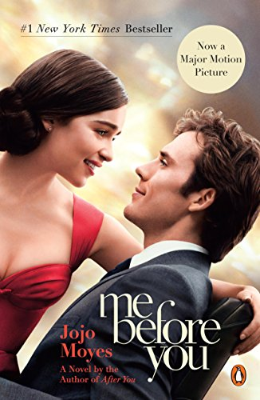
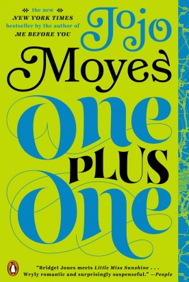
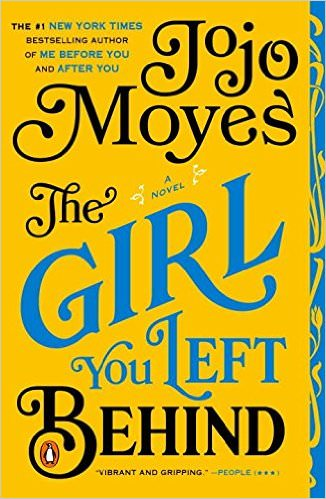
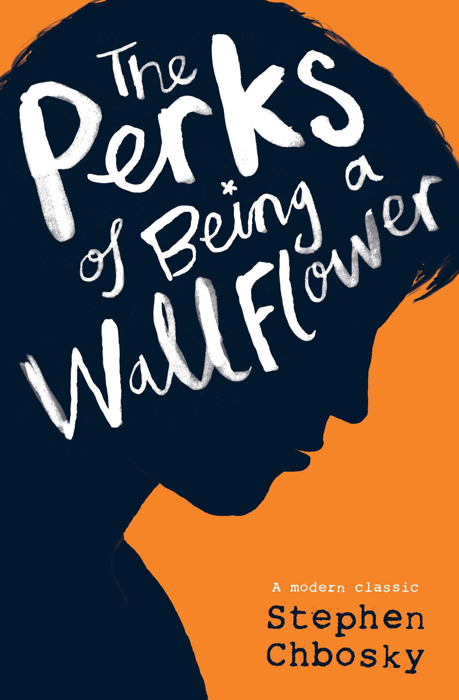
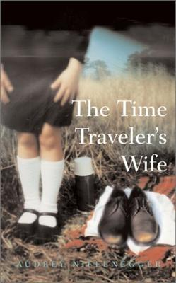
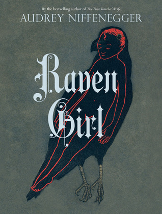
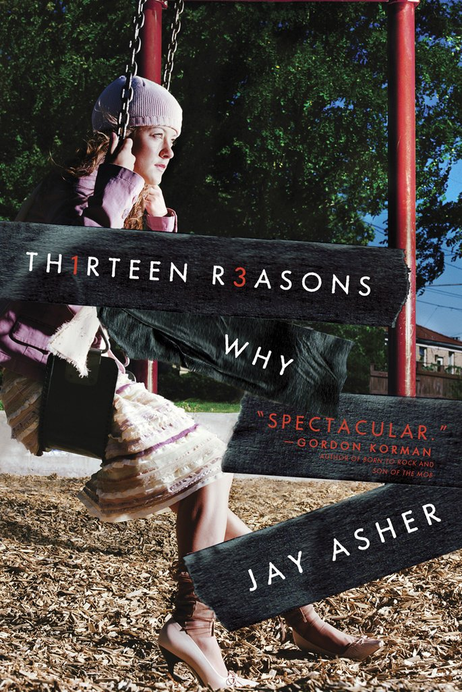
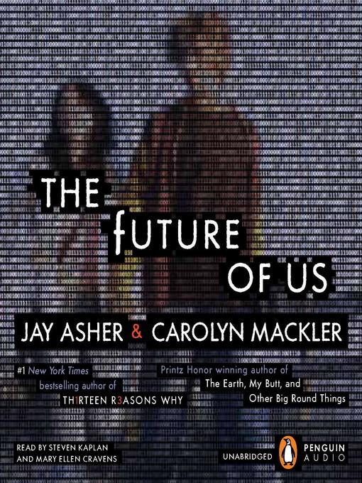
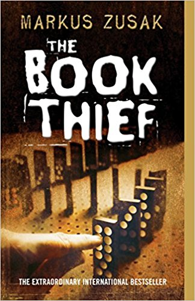
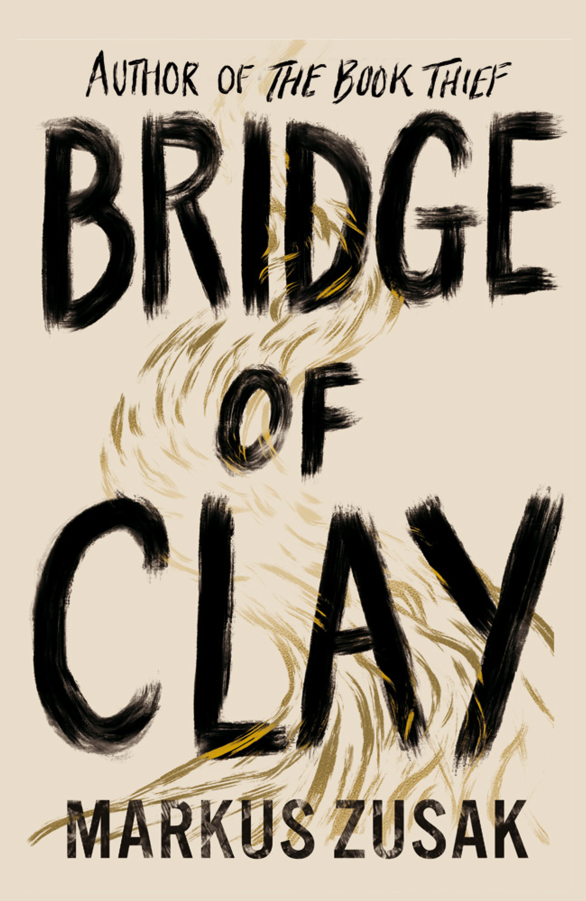

☰
What's Trending?
Top 5 Genres
1) Romance
- Love Story
- Fifty Shades of Grey
- Outlander
- Pride and Prejudice
- The Notebook
2) Crime/Mystery
- The top 100 crime novels of all time
- Murder on the Orient Express
- And there were none
- Origin
- The murder of Roger Ackroyd
3) Religious/Inspirational
- Jesus Calling
- Battlefield of the Mind
- Strong's Exhaustive Concordance of the Bible
- Fearless
- Sacred Marriage
4) Science Fiction/Fantasy
- Nineteen Eighty-Four (1984)
- Ender's Game
- Dune
- Neuromancer
- Fahenheit 451
5) Horror
- The Haunting of Hillhouse
- Frankenstein
- The Shining
- Dracula
- House of Ceares
Top 5 Books
1) Me Before You by Jojo Moyes
2) The Perks of Being a Wallflower by Stephen Chbosky
3) The time travel's wife
4) Thirteen Reasons Why
5) The book thief
Top 5 Authors
1) Jojo Moyes
Jojo Moyes (born 4 August 1969) is an English journalist and, since 2002, a romance novelist and screenwriter. She is one of only a few authors to have twice won the Romantic Novel of the Year Award by the Romantic Novelists' Association and has been translated into twenty-eight languages.You can also visit her webiste at https://www.jojomoyes.com/>Listed Below are some of her popular books!
Bio from: https://en.wikipedia.org/wiki/Jojo_Moyes


Me Before you. Louisa Clark is a small town girl who knows a lot about the people around her. Will is a quadriplegic man who hates everyone around him. Louisa is hired by Will's mum to take care of him for six months. Although they have a rocky start, their relationship grows over time, going for hate, to like, to love.

One Plus One. Suppose your life sucks. A lot. Your husband has done a vanishing act, your teenage stepson is being bullied, and your math whiz daughter has a once-in-a-lifetime opportunity that you can't afford to pay for. That's Jess's life in a nutshell-until an unexpected knight in shining armor offers to rescue them. Only Jess's knight turns out to be Geeky Ed, the obnoxious tech millionaire whose vacation home she happens to clean. But Ed has big problems of his own, and driving the dysfunctional family to the Math Olympiad feels like his first unselfish act in ages . . . maybe ever.

The girl you left behind. 1916 Sophie Lefevre is struggling to keep her family safe while her husband fights in the war. When her town is invaded and a German Kommandant becomes obsessed with the portrait her husband painted of her, Sophie is forced to make a horrible decision. Years later, modern-day Olivia owns the painting, having no clear idea of how much it's worth. Her husband has just died, and her grief is caught up in the painting he gifted to her. But the true ownership of the art is not clear, and the process of discovering the truth sends Liv on a path that could potentially lead to love and healing.
2) Stephen Chbosky
"Stephen Chbosky (born January 25, 1970) is an American novelist, screenwriter, and film director best-known for writing The New York Times bestselling coming-of-age novel The Perks of Being a Wallflower (1999), as well as for writing and directing the film version of the same book, starring Logan Lerman, Emma Watson, and Ezra Miller. He also wrote the screenplay for the 2005 film Rent and Disney's 2017 live action adaptation of Beauty and the Beast, alongside Evan Spiliotopoulos, and was co-creator, executive producer, and writer of the CBS television series Jericho, which aired from 2006 to 2008. Most recently, he directed the 2017 drama Wonder, starring Julia Roberts, Owen Wilson, and Jacob Tremblay."
Bio from https://en.wikipedia.org/wiki/Stephen_Chbosky


The Perks of Being a Wallflower. Charlie, the fifteen-year-old narrator of The Perks of Being a Wallflower, has just entered his freshman year of high school when the book begins. ... When the novel opens, Charlie is grappling with two major traumatic deaths of loved ones in his past; the suicide of his only middle-school friend, Michael Dobson, and the death of his favorite aunt, Helen.
Pieces. Filled with the excitement of discovery -- as a host of newcomers present their works to a wide and eager audience.This unique short-story collection is more than a good read -- it's an exciting glimpse into the future of fiction. The winners of MTV's "Write Stuff" competition share their voices and visions in tales that are endearingly raw, undeniably bold, and engagingly inventive.
3) Audrey Niffengger
Audrey Niffenegger (born June 13, 1963) is an American writer, artist and academic. You can also visit her website at https://www.audreyniffenegger.com/
Bio from https://en.wikipedia.org/wiki/Audrey_Niffenegger


The Time Travelers Wife. It is a love story about a man with a genetic disorder that causes him to time travel unpredictably, and about his wife, an artist, who has to cope with his frequent absences and dangerous experiences. The novel, which has been classified as both science fiction and romance, examines issues of love, loss, and free will. In particular, it uses time travel to explore miscommunication and distance in relationships, while also investigating deeper existential questions.

Raven Girl.Once there was a Postman who fell in love with a Raven. So begins the tale of a postman who encounters a fledgling raven while on the edge of his route and decides to bring her home. The unlikely couple falls in love and conceives a child - an extraordinary raven girl trapped in a human body. The raven girl feels imprisoned by her arms and legs and covets wings and the ability to fly. Betwixt and between, she reluctantly grows into a young woman, until one day she meets an unorthodox doctor who is willing to change her.
4) Jay Asher
Jay Asher (born September 30, 1975) is an American writer of contemporary novels for teens. He is best known for writing Thirteen Reasons Why. You can visit his website at http://jayasher.blogspot.com/
Bio from https://en.wikipedia.org/wiki/Jay_Asher


Thirteen Reasons Why. Clay Jensen returns home from school to find a mysterious box with his name on it lying on his porch. Inside he discovers cassette tapes recorded by Hannah Baker-his classmate and crush-who committed suicide two weeks earlier. On tape, Hannah explains that there are thirteen reasons why she decided to end her life. Clay is one of them. If he listens, he'll find out how he made the list.
Through Hannah and Clay's dual narratives, debut author Jay Asher weaves an intricate and heartrending story of confusion and desperation that will deeply affect teen readers.

The Future of Us. It's 1996, and Josh and Emma have been neighbors their whole lives. They've been best friends almost as long-at least, up until last November, when Josh did something that changed everything. Things have been weird between them ever since, but when Josh's family gets a free AOL CD in the mail, his mom makes him bring it over so that Emma can install it on her new computer. When they sign on, they're automatically logged onto their Facebook pages. But Facebook hasn't been invented yet. And they're looking at themselves fifteen years in the future.
5) Markus Zusak
Frank Zusak (born 23 June 1975) is an Australian writer. He is best known for The Book Thief and The Messenger (US title, I Am the Messenger), two novels for young adults which became international bestsellers. He won the Margaret A. Edwards Award in 2014 for his contributions to young-adult literature published in the United States. You can learn more at http://www.zusakbooks.com/
Bio from https://en.wikipedia.org/wiki/Markus_Zusak


The Book Thief. Trying to make sense of the horrors of World War II, Death relates the story of Liesel--a young German girl whose book-stealing and story-telling talents help sustain her family and the Jewish man they are hiding, as well as their neighbors.

Bridge of Clay. The breathtaking story of five brothers who bring each other up in a world run by their own rules. As the Dunbar boys love and fight and learn to reckon with the adult world, they discover the moving secret behind their father’s disappearance. At the center of the Dunbar, family is Clay, a boy who will build a bridge-for his family, for his past, for greatness, for his sins, for a miracle. The question is, how far is Clay willing to go? And how much can he overcome?
Interested in buying some of these books? Visit the following links!
Audible
Barnes and Noble
Book Finder
Kobo